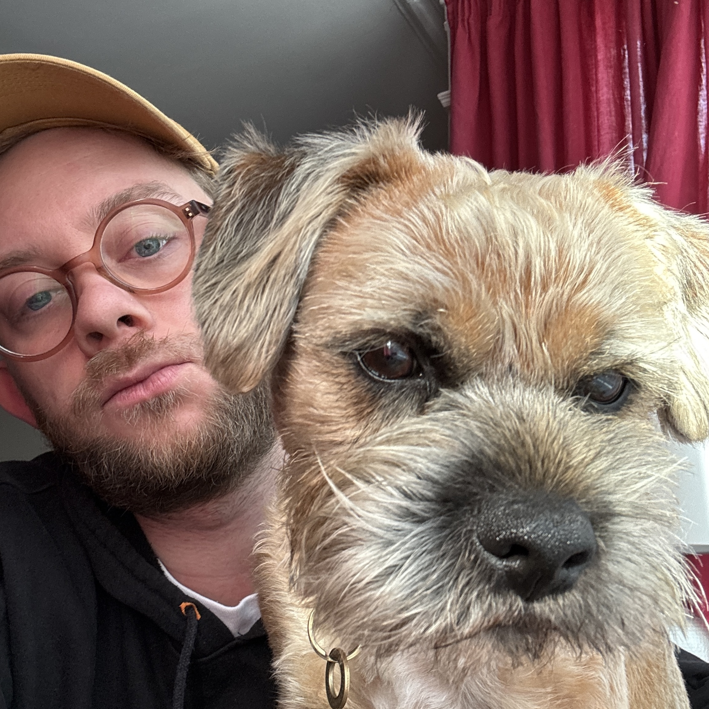
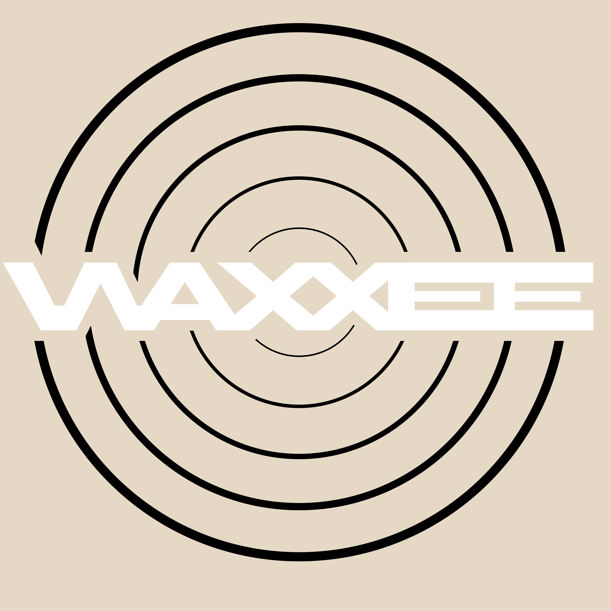
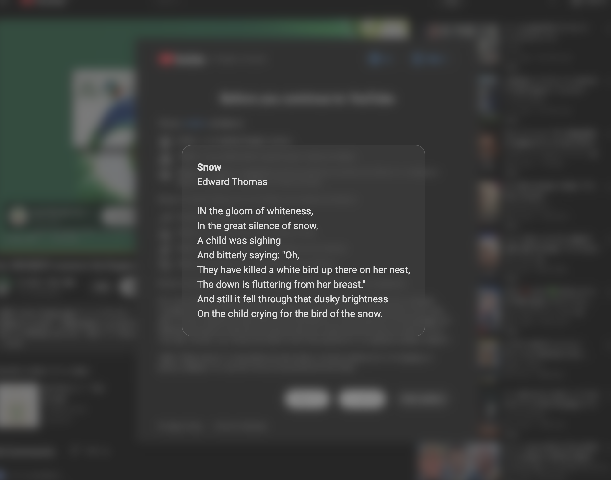

*fred also pictured
skills
- Ruby
- Rails
- CSS
- JavaScript
- Python
- HTML
- SQL
- postgreSQL
- git
- Adobe
- Stimulus
- Hotwire
- Turbo
- RESTful API
- Heroku
about
Hello! My name is Sam and I am a full-stack software developer specialising in building applications with Ruby on Rails, JavaScript, and Python.
Working with computers and writing code has been a lifelong interest for me and I have finally decided to make
it my career.
I love the day-to-day of problem solving, self-learning and writing
code. Getting the full picture of the problem and coming up with satisfying and well thought out solutions is
something that gives me great joy. Knowing how to write your own programs feels like a superpower that can be
used to build practical everyday solutions.
I used to write short scripts for Adobe Premiere Pro to do
repetitive tasks for me. Now I can create bigger programs with user-interfaces that are accessible to more
people. I want to use my new technical skills along with my long held creative problem solving ability to help
people and build digital solutions for organisations and individuals doing impactful work.
After close to ten years working in video production, I am looking for my first role in the software industry and am open to any software development position. I came out of my bootcamp as a full-stack developer, but I lean towards the front end: I most enjoy user interaction, design and product.
curriculum vitaeprojects

WAXXEE
I lead a team of four to build an app called 'WAXXEE'. This is a music discovery app based around real vinyl records, pulling from the discogs database. The infinite record shop, we have endless sections for the user to explore. They can create their own sections or 'personas' as we call them which use LLM integration to create custom API calls with a description and a cover image pulled from Unsplash. You can build a collection, follow your friends and get links to purchase the record from discogs. This ended up becoming a real passion project for me, and something that I am continuing to work on and improve.
- Rails
- JavaScript
- postgreSQL
- LLM

bard
A different take on ad blocking. Instead of trying to skip the adverts completely this chrome extension simply mutes the audio, blurs the page and displays a sonnet for a moment of reflection. When the advert is done playing the page is unmuted and the poem removed. Future updates will add options to pull from different sources for the text, e.g. motivational quotes or good news articles.
- JavaScript
- Fetch API
Startup Copilot
I was part of a group project to build an app called 'Startup Copilot'. I took ownership of one feature in particular which was the 'logo creator.' The user can upload a sketch idea for a logo. It would take all the info about the business that had been decided on and generate a professional-looking logo for the business based on those parameters and the drawing. To implement this I used two different LLM models, one to interpret the drawing and one to generate the image. This was then uploaded to Cloudinary and linked to the business profile.
- Rails
- Stimulus
- Google Gemini
- OpenAI
- Cloudinary

Videography
I have worked as a videographer for close to ten years. I have vast amounts of experience in the full Adobe Suite, operation of many types of cameras from mirrorless to cinema cameras. Along with this I have a drone licence and have operated a gimbal on a travel show on Channel 5 'Alexander Armstrong in Sri Lanka'. I have taken all of this creative experience and tech skills into my new career of software development. In particular my motion graphics experience I have found to be useful when working on UI/UX of applications, in terms of layout and also 'feel' of the animations.
- After Effects
- Premiere Pro
- Photoshop
- Blender
- DIT
contact
If you would like to get in touch, please reach out via email or through one of my social media platforms!
© Samuel Gorman-Hailey 2026